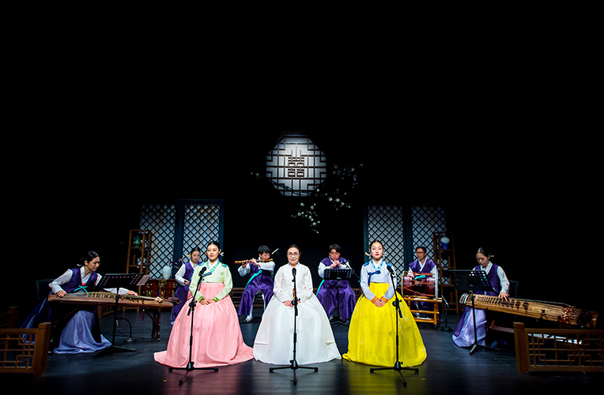
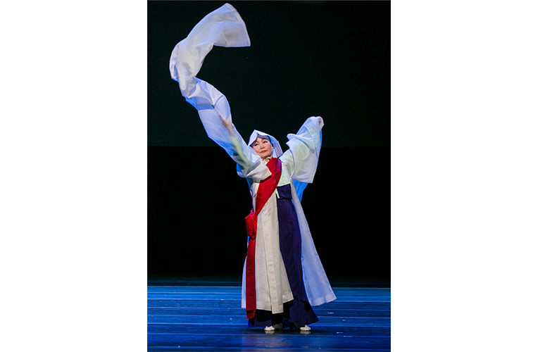

Wednesday Concert <Wednesday Performance of Korean Music and Dance>
- Time
- Every Wednesday in March·June·September·December, 19:30
- Venue
- Yeji-dang Hall
- Ticket Price
- A석 10,000won / B석 8,000won
- Cast/Direct
- Invited Musicians (Master musicians and their group) Audition (Rising and leading artists and groups)
- Audience Age
- Children in elementary school or older
An open space for both old traditional and creative art works!
The program aims not only to support artists involving traditional culture, but also to presents various traditional performing arts. Various artists, including master performers as well as young and rising artists show their own artistic world. The stage is filled with a wide range of traditional contents that succeed the soul of Korean ancestors along with newly added contemporary colors.
Mar.
8
The Fourth Pansori Drumming Recital ‘Gangsan style Simcheongga’ / Iltong drumming Preservation Association Busan division / Yi Hyeon-seo
Scenes of Beompijungryu ~ Simcheong falls into water, Hwacho taryeong, Blind Sim’s journey toward Hwangseong, Blind Sim opens his eyes
15
The Ninety nine Names / Hwang Gyu-seon Dance Group / Hwang Gyu-seon)
A dance play based on traditional dance and featuring names of ponds, villages, rice paddies all over Korea.
22
Yi Jun’s Gayageum White Clouds(Soun) / Yi Jun
Gwanak Yeongsanhoesang ‘Sangryeongsan, Gayageum Sanjo, Seodo vocal music ‘Chukwongyeong, Pagyeong’, Jangsaengboyeon
29
Invitation Concert Bak Eun-ha Yeon․hui
Seoljanggu(hourglass drum), Large gong dance, Seoljanggu dance, small gong dance
Jun.
7
Young Pansori Singer Bak Se-mi’s Dongcho style Simcheongga / Bak Se-mi
Scenes of Mrs. Sim’s last wish, Falling into Indangsu water, Blind Sim’s journey toward Hwangseong, Banga taryeong, Father and daughter meet ~ Blind Sim opens his eyes,
14
Yi Yeong-seop’s Gajeunhoesang
Gajeunhoesang is the longest version of <Yeongsanhoesang>, 13 piece suite adding <Dodeuri> in the middle and <Cheonnyeonmanse> at the end.
21
Jo Han-min’s ‘Starts the rhythms, develops, concludes, and release’ / Jo Han-min
The concert takes aesthetic values of Korean traditional rhythms consisting of gi, gyeong, gyeol, hae as its motive, and presents them in the form of multi artistic folk performance.
28
Invitation Concert The Song of Yeongsongdang Jo Sun-ja
Gagok, the most elegant music in the world
Master Jo’s concert of literati music with the classical lyric song, gagok, designated to the UNESCO’s World Cultural Heritage
Master Jo’s concert of literati music with the classical lyric song, gagok, designated to the UNESCO’s World Cultural Heritage
Sep.
6
Choe Jin Gayageum Recital ‘Choe Ok-sam school Gayageum sanjo complete set melody’ / Choe Jin
Choe Ok-sam school gayageum sanjo is well known with its artistic value in melodic composition. It was transmitted by Choe Ok-sam from Kim Chang-jo, and Ham Dongjeongwol learned it from Choe.
14
A Thousand Wind for Hope / Hong Jeong-yun
The late dance master Hwan Mu-bong is second generation of new dance performer and educator who cultivated Korean dance in Busan region. This piece is choreographed with a wish to harmonize all the dancers who transmits artistic pulse of master Hwang, so that the fire ball of Korean dance becomes the beautiful flame.
20
Choe Byeong-gil’s Jangdan Series-Talk Concert with the Audience/ Choe Byeong-gil
In addition to musical performance, the concert is audience participatory with communication.
27
Invitation Concert The spiritual link <Association of Bak Byeong-cheon song and dance preservation>
Blessing and prayer for the alive, Offering wine music, the dance of calling, exorcising, Bak Jong-gi school daegeum sanjo, Bak Byeong-cheon school drum dance
Dec.
6
Dream of Resonating String, the Jump of Gayageum – Cheongeui Yeon / Bak Hyeon-ju
The concert presents pansori simcheongga with gayageum performance. In gayageum singing, the scenes of Simcheong’ remembrance, Blind Sim missing his daughter, and the daughter thinking of her father are narrated in three different perspectives.
13
Yi Seon-gyeong Dance Company / Yi Seon-gyeong
Yeongsanmu, Minpurichum, The language of strings, The feast of yogo drum
20
Alone, and together / Kim Hye-mi
Choe Ok-sam school gayageum sanjo, Nawisawi, The landscape of wood island, Piri and 18 string gayageum ‘Black Waves’
27
Invitation Concert The love in time with dance, Kim Jin-hong
The recital of Kim’s life with the dance.
The stage. shows the memories in his movement flowing like the breeze in bamboo forest
The stage. shows the memories in his movement flowing like the breeze in bamboo forest

